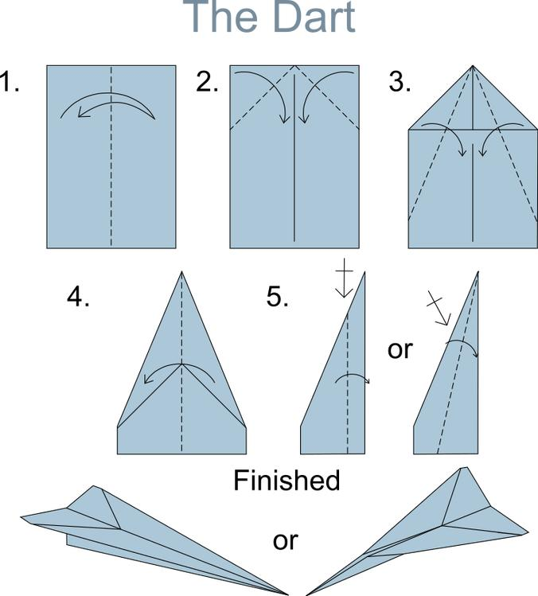
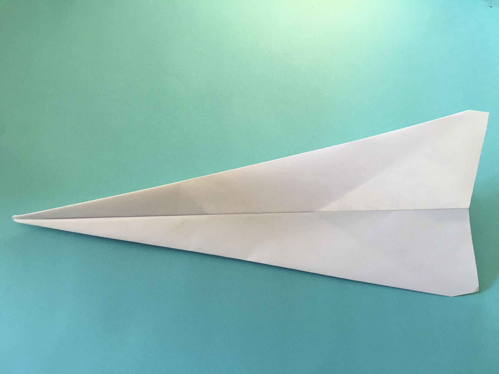
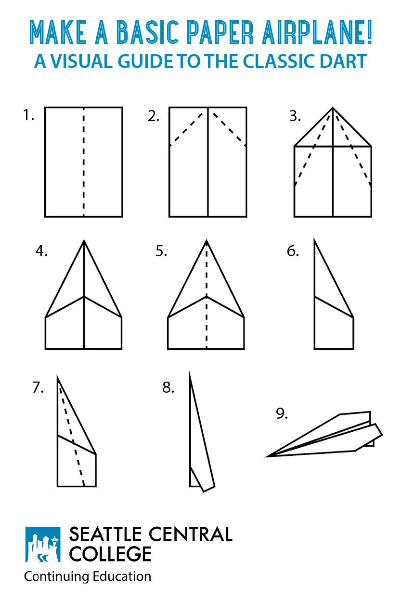
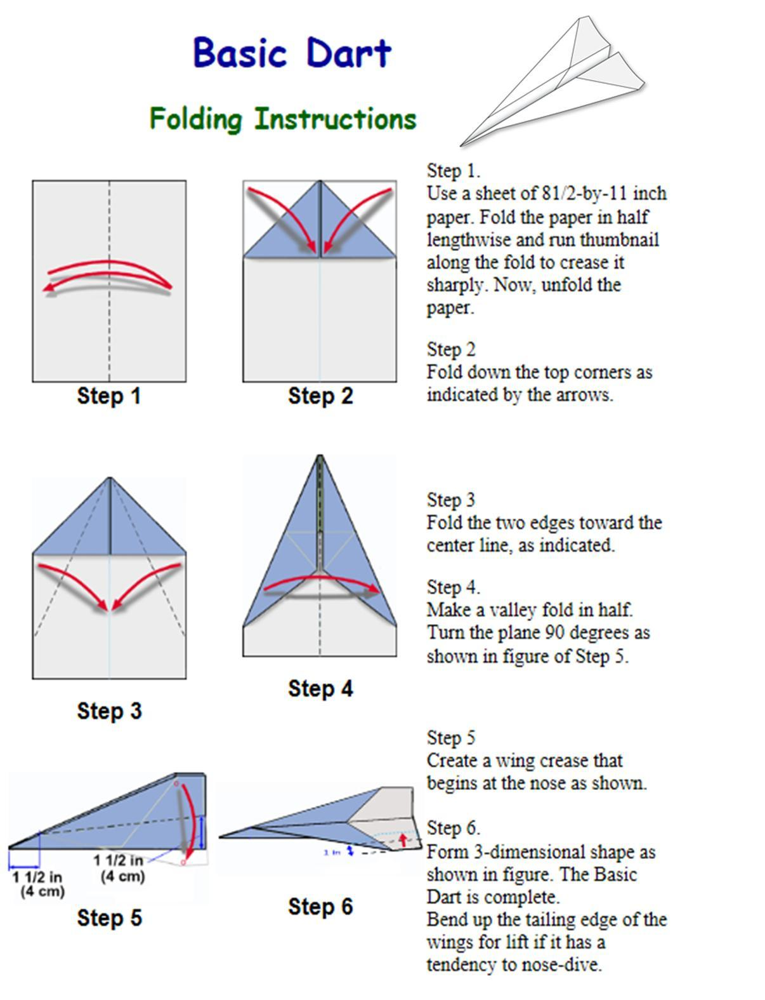

🎒 What You Need
The Dart is the most popular paper airplane ever! It's super fast and flies really far. 🌟
Takes less than 2 minutes to fold — and then hours of fun!
You'll need:
- 📄 One sheet of paper (A4 or Letter)
- 👐 A flat table to fold on
- 😄 A big smile and some fun!
📸 See the Dart in Action!




🪄 Folding Steps — Let's Go!
Fold in Half
Fold the paper in half the long way (hot-dog style). Press it firmly, then unfold. This line in the middle is your guide!
Fold the Top Corners
Fold both top corners down to meet the center line. They should touch perfectly in the middle — like a triangle hat!
Sharpen the Nose
Fold the slanted edges inward again toward the center. This makes a long pointy nose — the sharper the better!
Fold the Body
Now fold the whole airplane in half along the center crease. The pointy nose should stick out in front.
Make the Wings
Fold one flap down to make a wing. Flip the plane over and fold the other side to match. Both wings should look the same!
Ready to Fly!
Open the wings wide. You can bend the back edges up a tiny bit for smoother flying. Now throw it gently — and watch it go!
✈️ Flying Tips!
- ✅ Make really crisp, sharp folds.
- ✅ Keep both wings the same size.
- ✅ Throw it gently — don't use too much force!
- ✅ Try bending the wing tips up a little.
- ✅ Keep practicing — you'll get better every time!
🌟 Cool Facts!
- 📚 Paper planes teach you about real aerodynamics!
- 🌬️ Air flowing over wings creates lift — magic!
- 🎯 Small fold changes can make a big difference.
- 🏆 World record paper planes fly over 60 meters!
- 🛩️ Real engineers use paper models to study flight!